Bienvenidos
Ocoxotla es un lindo pueblo lleno de vegetación, perteneciente al Municipio de Mariano Escobedo, en Veracruz. Está situado en la zona de las altas montañas y está a 1,669 metros de altura sobre el nivel del mar.
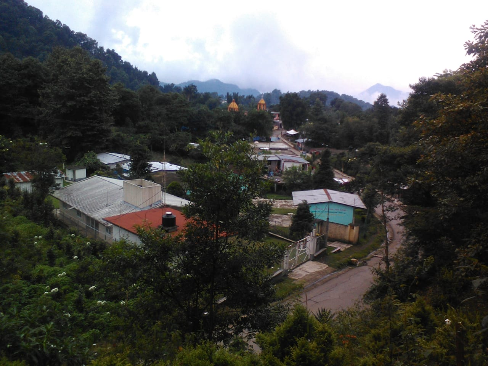
Origen del nombre
El nombre propio es Ocoxotla, que se compone del náhuatl ocotzotl,resina de ocote ó árbol ocozote, y de tla, que se expresa abundancia; y significa: "Donde abunda el "ocotzote" ó "Lugar de los Ocozotes".
El Ocozote es un árbol (Liquidambar styraciflua) también llamado liquidámbar americano, es un árbol caducifolio nativo de México, pertenece a la familia Altingiaceae. Mide de 20 a 40 m de altura, las hojas son en forma de estrella, el fruto es seco y globoso y con espinas.
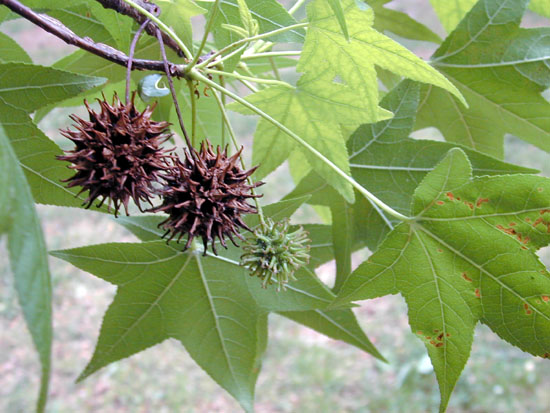
Cómo Llegar
Ocoxotla se encuentra a solo 3.4 kilómetros en dirección Suroeste del municipio de Mariano EScobedo. Puedes llegar en coche o autobús por la carretera principal. Ver en Google Maps.
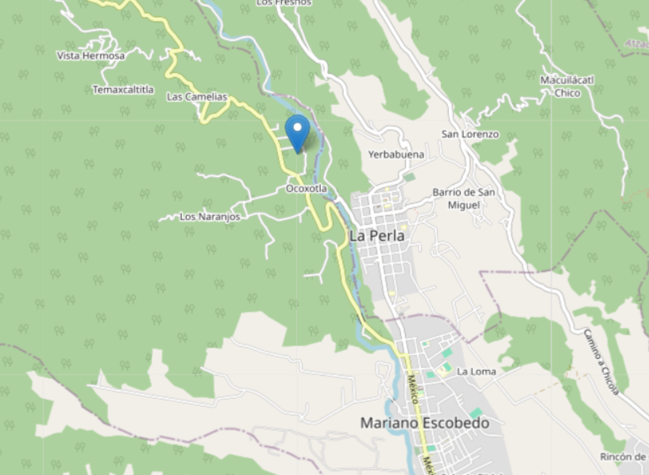
Historia y Cultura
Este pueblo es una zona de paso para Puebla y Veracruz, por lo que en la antiguedad las personas que pasaban por aquí decidieron alojarse y comenzar a hacer sus viviendas, con el transcurso del tiempo fueron creciendo las familias y aumentó la población.
Los habitantes realizan por parte del catolicismo una fiesta patronal el 8 de octubre en honor a la virgen de la Inmaculada Concepción, en este día realizan las mañanitas, misa, toreada, baile y hay pirotecnia.
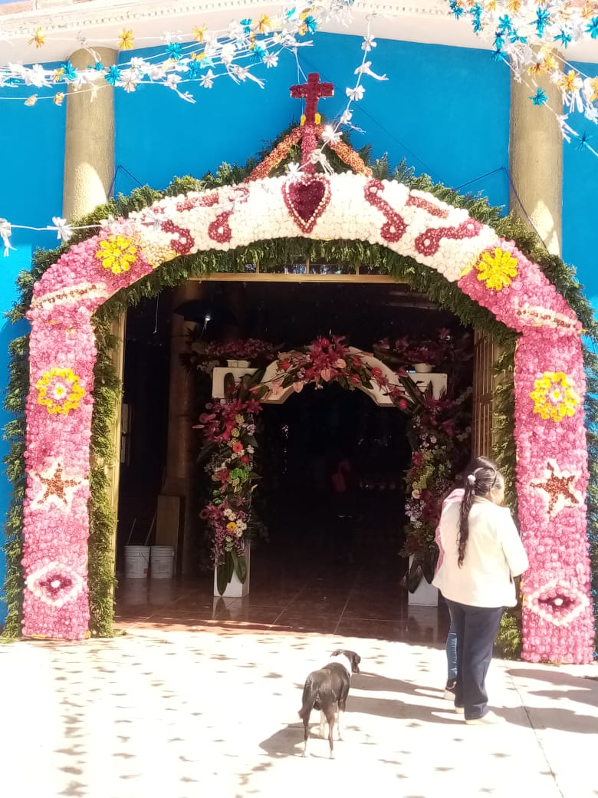

Gastronomía
La gastronomía de localidad es a base del maíz, entre sus principales platillos está el chileatole, que es un guisado de masa, elote, chile y epazote que se sirve como un antojito. Existen dos variedades de chileatole, el verde al que se le acostumbra poner carne de chito que es carne seca de chivo o el chileatole rojo al cual se le pone camarón seco. El alimento es aderezado con zumo de limón, mayonesa y queso rayado.
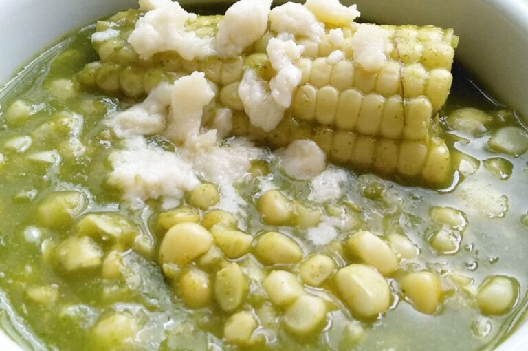
También se comen los tacos de flor de calabaza con chicharrón molido. Además se consumen las memelas que son un tipo de tortilla gruesa que en su interior contiene masa de frijol con hoja de aguacate, a la cual una vez frita se le agregan también encima queso, frijoles y crema además de su salsa, algo parecido son las picaditas, que son un poco más gruesas que las tortillas y son hechas en comal de barro, se le agrega manteca, salsa, queso y cebolla y se puede acompañar con frijoles y chicharrón.
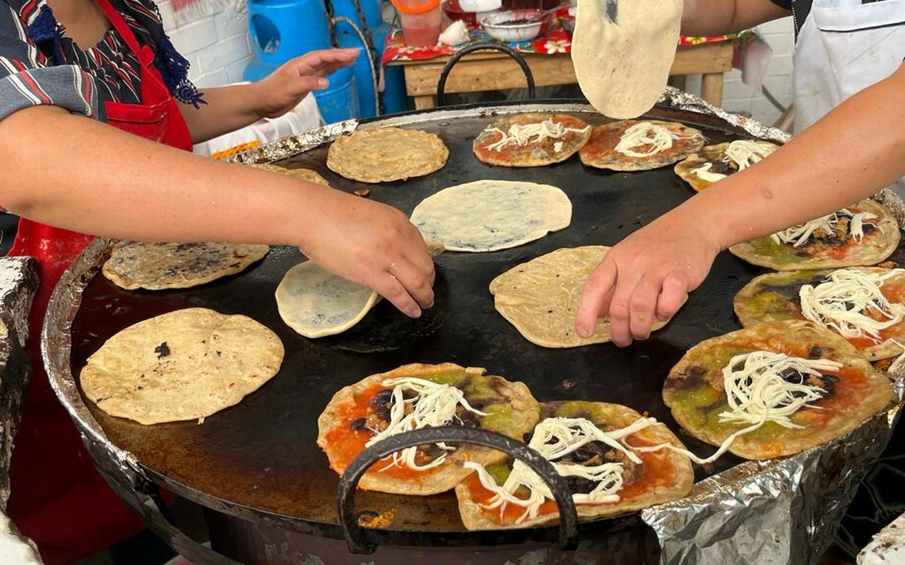
Las personas preparan una bebida artesanal llamada atole de granillo, que se hace con los granos de maíz maduro y se hierve con agua y ceniza o cal, para luego poder retirar la cáscara de los granos, después se lava con abundante agua y se quiebra en un molino manual, posteriormente lo hierven y agregan canela y azúcar o piloncillo al gusto.
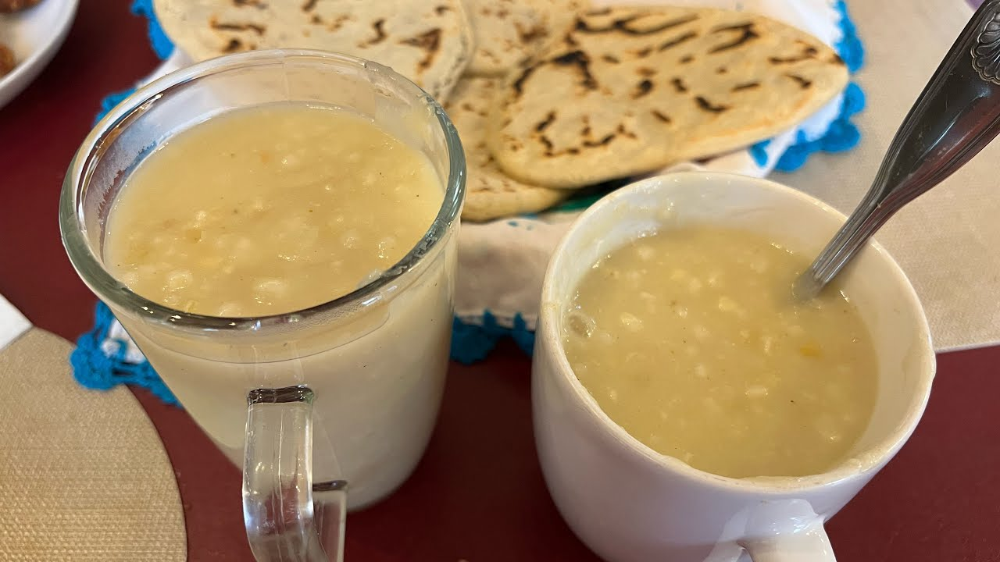
Se prepara un tipo de pan llamado tlaxcal elaborado a base de masa de elote, canela, azúcar y bicarbonato cocinado en comal y presentado en forma triangular.
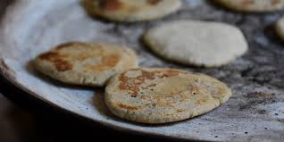
Clima
La localidad de Ocoxotla tiene clima frío-húmedo la mayor parte del año; en la primera quincena de junio llegan las lluvias abundantes que se extienden hasta los últimos días del mes de octubre (para este mes las lluvias son leves); durante este periodo, debido a la humedad alta, los días no son tan calurosos, como las noches tampoco son frías, es decir, las máximas rondan en torno a los 25 grados y las mínimas en torno a los 16 grados.
Los otoños en la localidad son muy cortos y casi no se distinguen; durante este periodo que dura desde el final de la temporada de lluvias hasta la primera helada que marca el inicio del invierno, los árboles tiran sus hojas y presentan colores ocres y amarillos, los días son frescos, despejados y con una humedad baja; durante el invierno (que dura desde los últimos días de noviembre, hasta la primera quincena de marzo) son comunes los días fríos, nublados, con nieblas y lloviznas, algunas veces se pueden apreciar en esta temporada las heladas en lugares llanos por la mañana, cuando todavía no salen los rayos del sol.
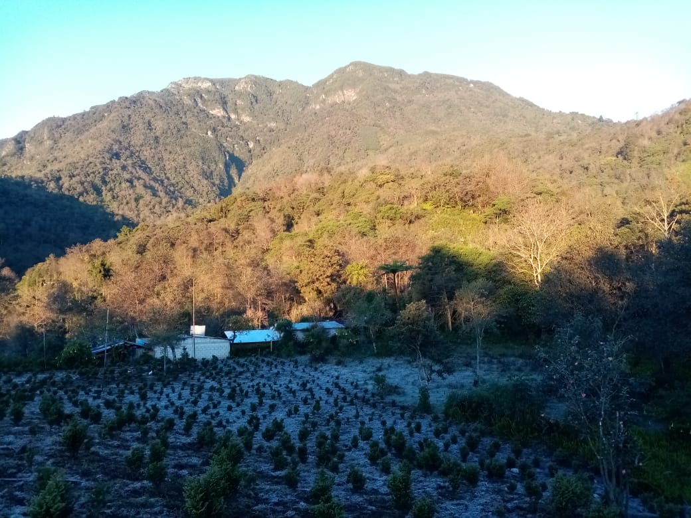
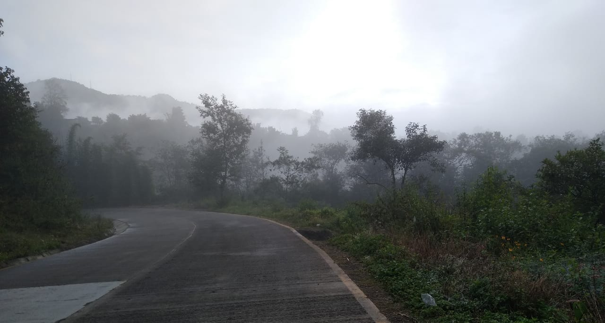
 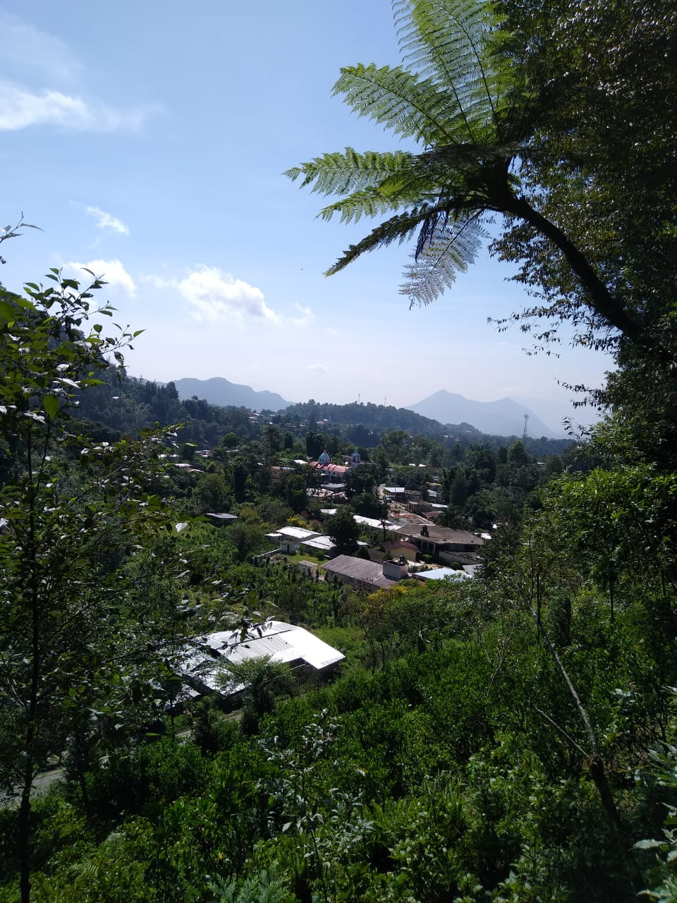
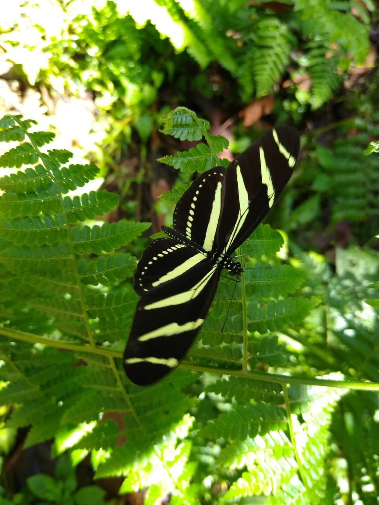
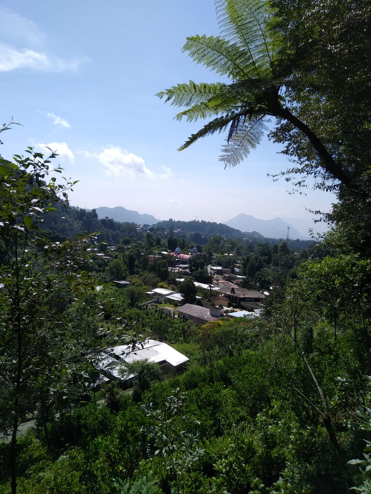
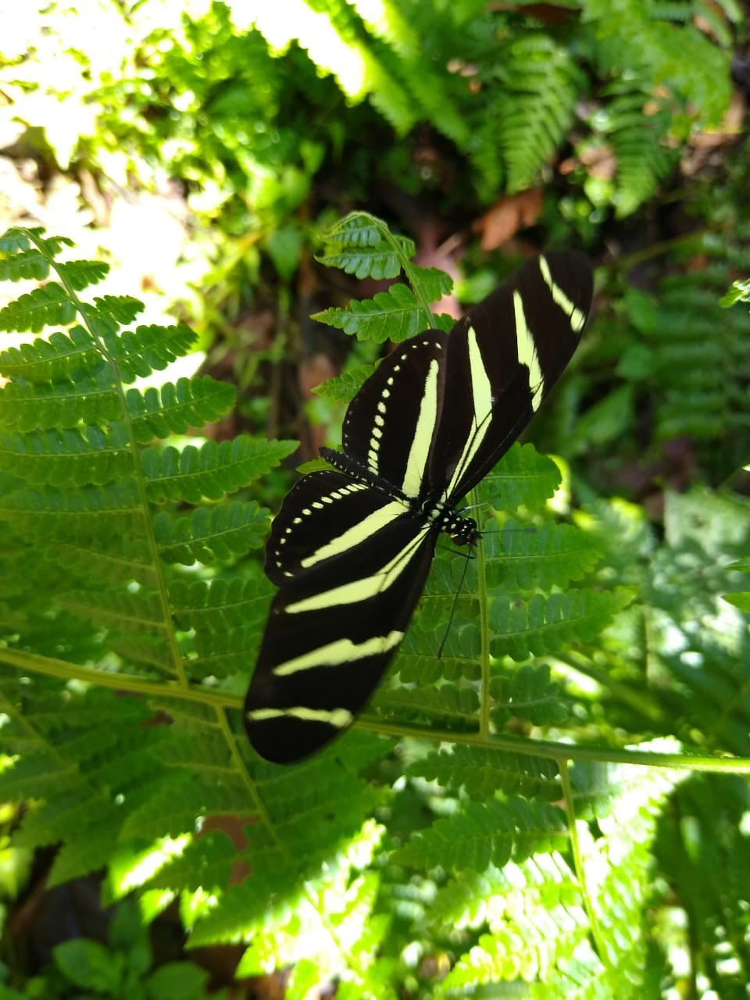


Cómo Llegar
Ocoxotla se encuentra a solo 3.4 kilómetros en dirección Suroeste del municipio de Mariano EScobedo. Puedes llegar en coche o autobús por la carretera principal. Ver en Google Maps.
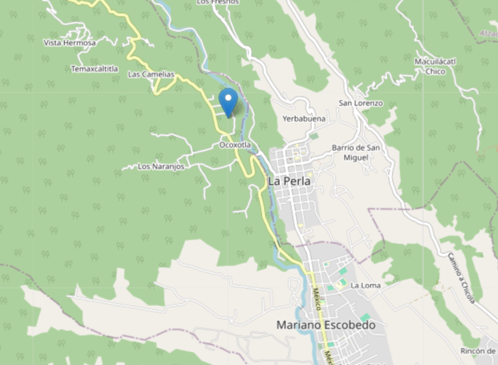